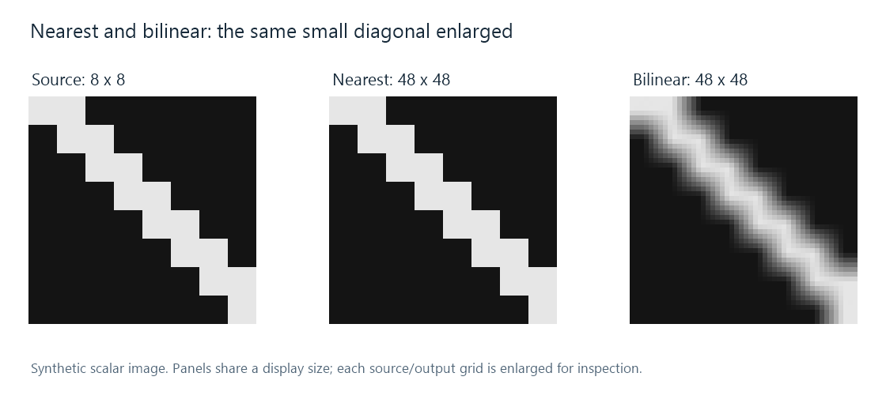

Bilinear Video Scaling
| Source corner | Value |
|---|---|
| Top-left, (0, 0) | 0.1 |
| Top-right, (1, 0) | 0.3 |
| Bottom-left, (0, 1) | 0.7 |
| Bottom-right, (1, 1) | 0.9 |
What value belongs one quarter of the way right and three quarters of the way down inside this cell? Bilinear interpolation answers by applying a linear mixture along both axes.
First interpolate across each row:
top = 0.75 × 0.1 + 0.25 × 0.3 = 0.15
bottom = 0.75 × 0.7 + 0.25 × 0.9 = 0.75
Then interpolate vertically:
output = 0.25 × 0.15 + 0.75 × 0.75 = 0.6.
The result is a smooth mixture of the surrounding values, with the closer bottom-left corner receiving the largest contribution.
The four weights behind the calculation
For horizontal fraction t and vertical fraction u, the four weights are (1−t)(1−u), t(1−u), (1−t)u, tu. At t = 0.25 and u = 0.75:
| Corner | Weight | Contribution |
|---|---|---|
| Top-left | 0.1875 | 0.01875 |
| Top-right | 0.0625 | 0.01875 |
| Bottom-left | 0.5625 | 0.39375 |
| Bottom-right | 0.1875 | 0.16875 |
The weights are nonnegative and sum to one. The interpolated result therefore lies within the range of those four component values. This conventional interpolation does not create the overshoot associated with negative reconstruction weights.
The one-dimensional weight function is a triangle: K(d) = max(0, 1−|d|). Multiplying one triangle along x by another along y gives the bilinear footprint. At a source center, its value is recovered; midway between centers, contributions are shared.
Smooth transitions and a spread-out narrow line

In the synthetic enlargement, neighboring dark and bright source values produce intermediate gray values. The diagonal's hard pixel blocks become gradual transitions. A one-sample bright line also spreads into neighboring reconstructed positions and can have a lower peak between source centers.
This is the practical character of the triangular weights: they replace abrupt sample selection with local blending. A video renderer can use that inexpensive interpolation for enlargement or chroma reconstruction. For an Emby comparison involving small text or thin lines, inspecting the same feature at the same presentation size shows how those mixtures change its apparent width and contrast.
Reduction also needs its footprint adapted
The four-corner calculation describes reconstruction at a position in the source grid. For a large reduction, one output position represents a much larger source area. Simply selecting four nearby corners can omit fine structures elsewhere in that area.
A bilinear-based downscaler can widen its triangular filtering footprint with the reduction ratio. Its input neighborhood then covers more source samples than the basic interpolation example. The scaling walkthrough distinguishes this scale adaptation from the weight function's triangular shape.
The sample values' interpretation matters too: bilinear interpolation in encoded RGB and interpolation in linear light give different mixtures. The distance weights define the spatial contribution; the processing stage determines what numerical quantity those weights are averaging.